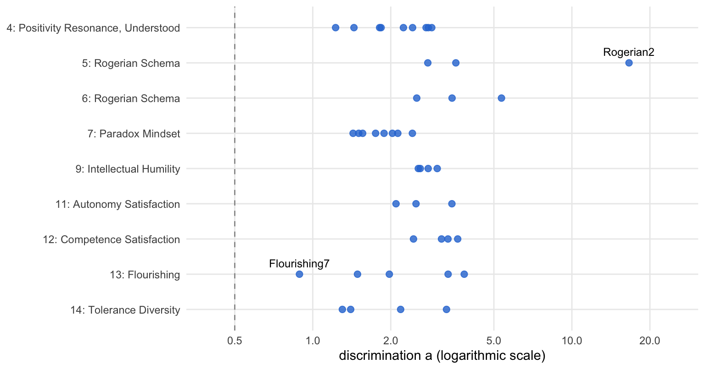
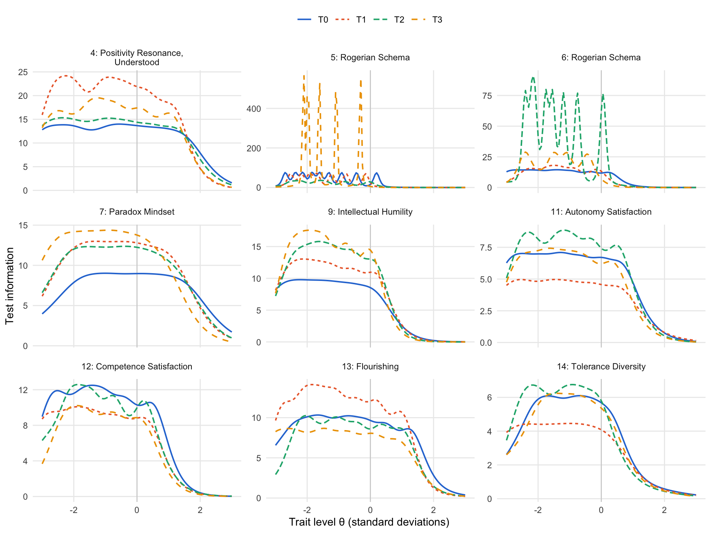

source("R/packages.R") # all packages (Chapter 1)
source("R/settings.R") # waves, conditions, folders (Chapter 1)
df <- readRDS("cache/df.rds") # one row per questionnaire (Chapter 2)
df_wide <- readRDS("cache/df_wide.rds") # one row per person (Chapter 2)
item_names <- names(select(df, ListenOther1:CompetenceNonFrustrated4))
source("R/scales.R") # the 23 scales (Chapter 2)
source("R/structure_ega.R") # network analyses (Chapter 16)17. Redundancy and item response theory
NoteAbout this chapter
Two rules prune the stable items of Chapter 16 further. An item response model per community flags items that hardly separate persons with low from persons with high standing on their community; the same models at each of the four waves show whether discriminations, thresholds and test information hold over time. A redundancy analysis finds pairs of items so close that one of them adds nothing. Each of the three analyses goes through the same six steps, from the items and answers it starts with to where its result goes next; a table at the end follows every community to the items it keeps. Feeds the redundancy and discrimination step of the psychometric supplement; Chapter 18 builds the final structure on the items that remain.
17.1 How each analysis is examined
Which models, and which rules? Each community of stable items from the bootstrap of the hierarchical solution (Chapter 16) gets a unidimensional graded response model (GRM; Samejima, 1969). For each item it estimates a discrimination a, how sharply the item’s answers change with the person’s standing on the community, and thresholds b, the standings at which a higher answer becomes more likely than a lower one. A GRM needs at least three items; items of smaller communities have no a. Unique variable analysis (UVA; Christensen et al., 2023) looks for redundancy in the network of all stable items: two items are redundant when their weighted topological overlap reaches .25, that is, when they are linked to the same other items with similar strength, so that one of them says nothing new.
What happens in each analysis? The same six steps, in the same order and in three parts: the analysis, its result, and what follows. The diagram shows the path; the list below describes each step.
flowchart TB
subgraph P0["the analysis"]
direction LR
S1["<b>Step 1</b><br>the starting point"]
S1 --> S2["<b>Step 2</b><br>the rule"]
S2 --> S3["<b>Step 3</b><br>the estimation"]
end
subgraph P1["the result"]
direction LR
S4{{"<b>Step 4</b><br>the result"}}
S4 --> S5["<b>Step 5</b><br>where it strains"]
end
V["<b>Step 6</b><br>what follows"]
P0 --> P1
P1 --> V
classDef all fill:#efeff2,stroke:#8a8a8a,color:#1d1d1f
classDef verdict fill:#ffffff,stroke:#1d1d1f,color:#1d1d1f
class S1,S2,S3,S4,S5 all
class V verdict
style P0 fill:#fafafa,stroke:#8a8a8a
style P1 fill:#fafafa,stroke:#8a8a8a
The six steps in detail:
The analysis:
- The starting point. Which items and which questionnaires enter: at T0 the questionnaires that answer every stable item, so that all models rest on the same persons; at the later waves the questionnaires of that wave that answer every stable item.
- The rule. When an item leaves. An item with a discrimination below .50 at T0 goes. Of each redundant set, the item with the highest discrimination stays; ties go to the item with the higher bootstrap stability, then to the first in the alphabet. The models at the later waves apply no rule of their own: they show whether the verdict of T0 holds over the year.
- The estimation. The models, written out: one GRM per community and wave, one UVA on all stable items.
The result:
- The result. Discriminations and marginal reliabilities, thresholds, test information and trait scores, the redundant sets and the item each set keeps.
- Where it strains. Estimates at the edge of what a model can identify, models that do not converge, and decisions that rest on a tie.
What follows:
- What follows. Which items stay, and where they go next.
17.2 Data and tools
Which data? The questionnaires of all four waves, and the communities and item stabilities from the bootstrap of Chapter 16:
ega <- readRDS("cache/structure_ega.rds") # Chapter 16
communities <- ega$hier_items |>
select(item, community = lower, stability = stability_lower)Which tools? The analysis of each step is written out below. The pipeline script runs the same two rules with the functions of R/structure_irt.R and stores the final pool that Chapter 18 reads; both are shown here, together with the wording of the items:
# Post hoc psychometrics: the bootstraps and the chain of item selections
# of Chapters 16 to 18. The T0 questionnaires calibrate every step; the
# composites are bootstrapped again at each wave.
# Run from swt-website/ after Chapter 2: Rscript scripts/structure_pipeline.R
source("R/packages.R")
source("R/settings.R")
df <- readRDS("cache/df.rds") # one row per questionnaire (Chapter 2)
item_names <- names(select(df, ListenOther1:CompetenceNonFrustrated4))
source("R/structure_pool.R") # item pruning (Chapter 15)
source("R/structure_ega.R") # network analyses (Chapter 16)
source("R/structure_irt.R") # redundancy and IRT (Chapter 17)
source("R/structure_composites.R") # composites (Chapter 18)
# Chapter 16: bootstrap until every item is stable, then bootstrap the
# hierarchical solution of the stable items. The items are ordered by
# community and stability; louvain and the bootstrap draws depend on the
# order of the items.
pool <- structure_pool(df)
converged <- converge_ega(items_at(df, "T0", pool))
stable <- converged$stability |>
arrange(community, desc(stability)) |>
pull(item)
boot_hier <- boot_hier_ega(items_at(df, "T0", stable))
saveRDS(list(pool = pool,
passes = converged$passes,
stability = converged$stability,
stable = stable,
hier_items = hier_item_stability(boot_hier),
hier_lower = structural_consistency(boot_hier, "lower_order"),
hier_higher = structural_consistency(boot_hier, "higher_order")),
"cache/structure_ega.rds")
# Chapter 17: GRM per community and UVA on the persons who answered all
# stable items; the communities come from the bootstrap above
communities <- hier_item_stability(boot_hier) |>
select(item, community = lower, stability = stability_lower)
calibration <- items_at(df, "T0", communities$item) |> drop_na()
pruned <- community_discrimination(calibration, communities) |>
prune_items(redundant_sets(calibration))
final_pool <- pruned |> filter(keep) |> pull(item)
saveRDS(list(pruned = pruned, final_pool = final_pool),
"cache/structure_irt.rds")
# Chapter 18: the hierarchical solution of the final pool and its
# bootstrap; the composites of its communities, bootstrapped at each wave
final_T0 <- items_at(df, "T0", final_pool)
assignment <- hier_ega(final_T0, hier_seeds[["T0"]]) |>
hier_assignment() |>
arrange(higher, lower, item)
boot_final <- boot_hier_ega(final_T0)
composites <- composite_items(assignment)
boot_wave <- \(wave) boot_ega(composite_scores(df, composites, wave))
composite_boot <- tibble(wave = names(hier_seeds)) |>
mutate(boot = map(wave, boot_wave),
n = map_int(boot, \(b) b$EGA$n),
dimensions = map_int(boot, \(b) b$EGA$n.dim),
stability = map(boot, item_stability),
consistency = map(boot, structural_consistency),
frequency = map(boot, \(b) as_tibble(b$frequency))) |>
select(-boot)
saveRDS(list(assignment = assignment,
final_items = hier_item_stability(boot_final),
final_lower = structural_consistency(boot_final,
"lower_order"),
final_higher = structural_consistency(boot_final,
"higher_order"),
composite_boot = composite_boot),
"cache/structure_final.rds")# Redundancy and item response theory (Chapters 17 and 18). A graded
# response model (GRM) per community gives each item its discrimination a;
# unique variable analysis (UVA) finds pairs of items so close in the
# network that one of them says nothing new.
# a unidimensional GRM on the persons who answered every item
grm_fit <- \(items) {
mirt(drop_na(items), 1, itemtype = "graded", verbose = FALSE)
}
discrimination <- \(fit) {
a <- coef(fit, IRTpars = TRUE, simplify = TRUE)$items[, "a"]
tibble(item = names(a), a = unname(a))
}
# the discrimination of every item, from one GRM per community; a GRM
# needs at least three items, so items of smaller communities get NA
community_discrimination <- \(items, communities) {
grm <- communities |>
filter(n() >= 3, .by = community) |>
summarise(fit = list(grm_fit(items[item])), .by = community) |>
mutate(reliability = map_dbl(fit, marginal_rxx),
a = map(fit, discrimination)) |>
select(community, reliability, a) |>
unnest(a)
communities |>
left_join(grm, by = c("community", "item"))
}
# sets of redundant items: a weighted topological overlap of .25 or more
redundant_sets <- \(items) {
uva <- UVA(items, uva.method = "MBR", cut.off = .25, reduce = FALSE,
verbose = FALSE)
imap(uva$redundant, \(partners, item) sort(unique(c(item, partners))))
}
# from a redundant set keep the item with the highest discrimination, then
# the highest bootstrap stability, then the first in the alphabet
keep_one <- \(set, items) {
items |>
filter(item %in% set) |>
arrange(desc(a), desc(stability), item) |>
slice(1) |>
pull(item)
}
# the items that stay: drop the poorly discriminating (a < .50) and all but
# one item of each redundant set; items has item, a and stability
prune_items <- \(items, sets) {
redundant <- map(sets, \(set) setdiff(set, keep_one(set, items))) |>
list_c()
items |>
mutate(poor = !is.na(a) & a < .50,
redundant = item %in% redundant,
keep = !poor & !redundant)
}
# the thresholds of each item of a GRM: b1, b2, ..., the trait levels at
# which an answer above a category becomes more likely than one at or below
thresholds <- \(fit) {
coef(fit, IRTpars = TRUE, simplify = TRUE)$items |>
as_tibble(rownames = "item") |>
select(item, starts_with("b")) |>
pivot_longer(-item, names_to = "threshold", values_to = "b",
values_drop_na = TRUE)
}
# the information of all items of a GRM together, over the trait levels
test_information <- \(fit, theta = seq(-4, 4, by = .1)) {
tibble(theta = theta, information = testinfo(fit, matrix(theta)))
}# The wording of every item (English version of the questionnaire), under
# the names of the analysis file (Chapter 2), and the reverse-keyed items
need <- \(numbers) paste0("needSatisfaction", numbers)
wording_names <- c(
"Alienation1" = "NoAlienation1", "Alienation2" = "NoAlienation2",
"Isolation1" = "NoIsolation1", "Isolation2" = "NoIsolation2",
set_names(paste0("AutonomySatisfaction", 1:4), need(c(1, 7, 13, 19))),
set_names(paste0("AutonomyNonFrustrated", 1:4), need(c(2, 8, 14, 20))),
set_names(paste0("RelatednessSatisfaction", 1:4), need(c(3, 9, 15, 21))),
set_names(paste0("RelatednessNonFrustrated", 1:4), need(c(4, 10, 16, 22))),
set_names(paste0("CompetenceSatisfaction", 1:4), need(c(5, 11, 17, 23))),
set_names(paste0("CompetenceNonFrustrated", 1:4), need(c(6, 12, 18, 24)))
)
item_wording <- read_csv("data/item_labels.csv", show_col_types = FALSE) |>
transmute(item = coalesce(wording_names[column_name], column_name),
text = str_squish(label_en))
# answered on the reverse scale and turned around in Chapter 2
reverse_keyed <- c(str_c("NoAlienation", 1:2), str_c("NoIsolation", 1:2),
"Flourishing5", "Flourishing6", str_c("Rogerian", 7:9),
"ToleranceDiversity1",
str_c(rep(c("Autonomy", "Relatedness", "Competence"),
each = 4), "NonFrustrated", rep(1:4, 3)))17.3 The three analyses
Which analyses, in which order? First the discrimination of every item at T0, where the first rule applies. Then the same models at each of the four waves. Last the redundancy analysis, where the second rule applies.
Discrimination
Its path through the steps. One row per step below; the analysis rests on the complete January questionnaires January:
| Step | Question | Result | Next |
|---|---|---|---|
| 2 | When does an item go? | a discrimination below .50 at T0 | estimation |
| 3 | How is each model fitted? | one GRM per community of three or more items | result |
| 4 | Does every item separate low from high? | yes: no item falls below .50 | where it strains |
| 5 | Is every estimate plausible? | one discrimination is too high, among near-identical Rogerian items | what follows |
| 6 | What does the rule decide? | it removes nothing | the models at each wave |
The analysis · Steps 1 to 3
Step 1 · The starting point January
Which items enter? The 53 stable items in the communities of the bootstrap (Chapter 16), each community with its scales:
communities |>
summarise(items = n(),
scales = str_flatten_comma(unique(scale_label(item))),
.by = community) |>
arrange(community)| community | items | scales |
|---|---|---|
| 1 | 2 | I Listen |
| 2 | 2 | Kama Muta |
| 3 | 2 | Others Listen to Me |
| 4 | 9 | Positivity Resonance, Understood |
| 5 | 3 | Rogerian Schema |
| 6 | 3 | Rogerian Schema |
| 7 | 8 | Paradox Mindset |
| 8 | 2 | Intellectual Humility |
| 9 | 4 | Intellectual Humility |
| 10 | 2 | Empowerment |
| 11 | 3 | Autonomy Satisfaction |
| 12 | 4 | Competence Satisfaction |
| 13 | 5 | Flourishing |
| 14 | 4 | Tolerance Diversity |
Which answers? The T0 questionnaires that answer every stable item:
calibration <- df |>
filter(Occasion == "T0") |>
select(all_of(communities$item)) |>
drop_na()
dim(calibration)[1] 297 53Of the 358 questionnaires, 297 answer all 53 stable items.
Next → Step 2, the rule: When does an item go?
Step 2 · The rule January
When does an item go? When its discrimination lies below .50: its answers then hardly change with the standing of the person on the community. Which communities get a model? Those with at least three items:
modelled <- communities |>
filter(n() >= 3, .by = community)
modelled |>
summarise(items = n(), .by = community)| community | items |
|---|---|
| 4 | 9 |
| 7 | 8 |
| 14 | 4 |
| 5 | 3 |
| 6 | 3 |
| 9 | 4 |
| 11 | 3 |
| 12 | 4 |
| 13 | 5 |
9 communities with 43 items get a model. The other 10 items sit in 5 communities of two; they have no a, and the first rule cannot take them out.
Next → Step 3, the estimation: How is each model fitted?
Step 3 · The estimation January
How is each model fitted? One GRM per community, on the 297 complete questionnaires:
disc_grm <- modelled |>
summarise(items = list(item), .by = community) |>
mutate(fit = map(items, \(i)
mirt(drop_na(calibration[i]), 1, itemtype = "graded",
verbose = FALSE)))From each model its marginal reliability and the discrimination of every item; items of the communities of two keep an empty a:
disc_a <- disc_grm |>
mutate(reliability = map_dbl(fit, marginal_rxx),
a = map(fit, \(f)
coef(f, IRTpars = TRUE, simplify = TRUE)$items |>
as_tibble(rownames = "item") |>
select(item, a))) |>
select(community, reliability, a) |>
unnest(a)
discriminations <- communities |>
left_join(disc_a, by = c("community", "item"))Next → Step 4, the result: Does every item separate low from high?
The result · Steps 4 and 5
Step 4 · The result January
Does every item separate low from high? Each item with its community, its bootstrap stability, the marginal reliability of its community and its discrimination:
discriminations |>
mutate(across(c(reliability, a, stability), \(x) round(x, 3))) |>
arrange(community, desc(a))| item | community | stability | reliability | a |
|---|---|---|---|---|
| ListenSelf1 | 1 | 0.996 | NA | NA |
| ListenSelf2 | 1 | 0.996 | NA | NA |
| KamaMuta1 | 2 | 0.946 | NA | NA |
| KamaMuta2 | 2 | 0.946 | NA | NA |
| ListenOther1 | 3 | 0.642 | NA | NA |
| ListenOther2 | 3 | 0.642 | NA | NA |
| Resonance6 | 4 | 0.902 | 0.927 | 2.878 |
| Resonance5 | 4 | 0.798 | 0.927 | 2.792 |
| Resonance8 | 4 | 0.872 | 0.927 | 2.737 |
| Resonance7 | 4 | 0.872 | 0.927 | 2.428 |
| Resonance4 | 4 | 0.798 | 0.927 | 2.238 |
| Resonance3 | 4 | 0.908 | 0.927 | 1.835 |
| Resonance2 | 4 | 0.628 | 0.927 | 1.811 |
| Resonance1 | 4 | 0.628 | 0.927 | 1.442 |
| Understood1 | 4 | 0.454 | 0.927 | 1.225 |
| Rogerian2 | 5 | 1.000 | 0.806 | 16.612 |
| Rogerian3 | 5 | 1.000 | 0.806 | 3.566 |
| Rogerian1 | 5 | 1.000 | 0.806 | 2.780 |
| Rogerian5 | 6 | 0.396 | 0.818 | 5.348 |
| Rogerian4 | 6 | 0.396 | 0.818 | 3.448 |
| Rogerian6 | 6 | 0.396 | 0.818 | 2.519 |
| ParadoxMindset6 | 7 | 0.988 | 0.894 | 2.424 |
| ParadoxMindset5 | 7 | 0.998 | 0.894 | 2.129 |
| ParadoxMindset7 | 7 | 0.990 | 0.894 | 2.030 |
| ParadoxMindset8 | 7 | 0.988 | 0.894 | 1.884 |
| ParadoxMindset4 | 7 | 0.990 | 0.894 | 1.748 |
| ParadoxMindset9 | 7 | 0.996 | 0.894 | 1.558 |
| ParadoxMindset3 | 7 | 0.990 | 0.894 | 1.504 |
| ParadoxMindset2 | 7 | 0.990 | 0.894 | 1.431 |
| IntellectualHumility1 | 8 | 0.974 | NA | NA |
| IntellectualHumility2 | 8 | 0.974 | NA | NA |
| IntellectualHumility4 | 9 | 1.000 | 0.812 | 3.022 |
| IntellectualHumility6 | 9 | 1.000 | 0.812 | 2.788 |
| IntellectualHumility3 | 9 | 0.998 | 0.812 | 2.599 |
| IntellectualHumility5 | 9 | 1.000 | 0.812 | 2.555 |
| Empowerment1 | 10 | 0.890 | NA | NA |
| Empowerment2 | 10 | 0.890 | NA | NA |
| AutonomySatisfaction2 | 11 | 0.990 | 0.833 | 3.443 |
| AutonomySatisfaction3 | 11 | 0.986 | 0.833 | 2.503 |
| AutonomySatisfaction4 | 11 | 0.990 | 0.833 | 2.096 |
| CompetenceSatisfaction2 | 12 | 0.992 | 0.864 | 3.625 |
| CompetenceSatisfaction4 | 12 | 0.994 | 0.864 | 3.325 |
| CompetenceSatisfaction1 | 12 | 0.998 | 0.864 | 3.139 |
| CompetenceSatisfaction3 | 12 | 1.000 | 0.864 | 2.447 |
| Flourishing1 | 13 | 0.998 | 0.894 | 3.842 |
| Flourishing2 | 13 | 0.998 | 0.894 | 3.329 |
| Flourishing4 | 13 | 0.996 | 0.894 | 1.975 |
| Flourishing3 | 13 | 0.924 | 0.894 | 1.488 |
| Flourishing7 | 13 | 0.576 | 0.894 | 0.888 |
| ToleranceDiversity4 | 14 | 1.000 | 0.783 | 3.282 |
| ToleranceDiversity5 | 14 | 1.000 | 0.783 | 2.183 |
| ToleranceDiversity3 | 14 | 1.000 | 0.783 | 1.401 |
| ToleranceDiversity2 | 14 | 1.000 | 0.783 | 1.301 |
All discriminations at once, by community (on a logarithmic scale); dashed: the rule of .50.
discriminations |>
filter(!is.na(a)) |>
mutate(label = str_c(community, ": ",
str_flatten_comma(unique(scale_label(item)))),
.by = community) |>
mutate(label = fct_reorder(label, community, .desc = TRUE)) |>
ggplot(aes(x = a, y = label)) +
geom_vline(xintercept = .50, colour = "grey60", linetype = 2) +
geom_point(colour = "#2a78d6", size = 2.2, alpha = .8) +
geom_text(data = \(d) filter(d, a == max(a) | a == min(a)),
aes(label = item), size = 3.2, vjust = -.9) +
scale_x_log10(limits = c(.4, 25), breaks = c(.5, 1, 2, 5, 10, 20)) +
labs(x = "discrimination a (logarithmic scale)", y = NULL) +
theme_minimal(base_size = 11) +
theme(panel.grid.minor = element_blank())
The discriminations range from 0.89 (Flourishing7) to 16.61 (Rogerian2); no item falls below .50. The marginal reliabilities of the 9 modelled communities lie between .78 and .93. The 10 items in communities of two have no a.
Next → Step 5, where it strains: Is every estimate plausible?
Step 5 · Where it strains January
Is every estimate plausible? A discrimination as high as that of Rogerian2 is not plausible for a single item. Its community holds the first three Rogerian items, and their wording:
item_wording |>
filter(item %in% str_c("Rogerian", 1:3)) |>
left_join(select(discriminations, item, a), by = "item") |>
mutate(a = round(a, 3))| item | text | a |
|---|---|---|
| Rogerian1 | gains insight into the speaker’s perspective. | 2.780 |
| Rogerian2 | achieves a clear understanding of the speaker’s arguments. | 16.612 |
| Rogerian3 | comprehends the speaker’s attitudes, feelings, and perceptions. | 3.566 |
All three say that a good listener understands the speaker, and the GRM reads their near-identical answers as an almost perfect indicator. The redundancy analysis below keeps only one of them.
Next → Step 6, what follows: What does the first rule decide?
What follows · Step 6
Step 6 · What follows
What does the first rule decide? It removes nothing: all 53 items go on. Their discriminations decide, in the redundancy analysis, which item of a redundant set stays; the same models at the other waves come first.
The models at each wave
Its path through the steps. One row per step below; the models run at each of the four waves each wave:
| Step | Question | Result | Next |
|---|---|---|---|
| 2 | What is judged at the later waves? | whether the verdict of T0 holds | estimation |
| 3 | How are the models fitted? | the same models at each wave | result |
| 4 | Does every item separate at every wave? | all items but one keep .50 | where it strains |
| 5 | Which item falls short, which models fail? | one item, the weakest at every wave | what follows |
| 6 | What do the waves mean for the pool? | the verdict of T0 holds | redundancy |
The analysis · Steps 1 to 3
Step 1 · The starting point each wave
Which answers enter? At each wave, the questionnaires that answer every stable item:
wave_grm <- tibble(wave = levels(df$Occasion)) |>
mutate(answers = map(wave, \(w)
df |>
filter(Occasion == w) |>
select(all_of(communities$item)) |>
drop_na()))
wave_grm |>
transmute(wave,
questionnaires = map_int(wave, \(w) sum(df$Occasion == w)),
complete = map_int(answers, nrow))| wave | questionnaires | complete |
|---|---|---|
| T0 | 358 | 297 |
| T1 | 302 | 241 |
| T2 | 269 | 229 |
| T3 | 211 | 183 |
At T0 these are the 297 questionnaires of the discrimination analysis; by T3 the complete questionnaires fall to 183.
Next → Step 2, the rule: What is judged at the later waves?
Step 2 · The rule each wave
What is judged at the later waves? No item leaves here: the rule of .50 applies at T0. The models of the other waves show whether its verdict holds over the year: whether every item keeps a discrimination of at least .50, whether the thresholds and the test information stay where they were, and whether trait scores rank persons as the item means do.
Next → Step 3, the estimation: How are the models fitted?
Step 3 · The estimation each wave
How are the models fitted? The GRMs of the discrimination analysis once more at each wave, on the questionnaires of that wave that answer every stable item; at T0 they are the same models:
wave_grm <- wave_grm |>
expand_grid(community = unique(modelled$community)) |>
mutate(items = map2(answers, community, \(a, c)
a[modelled$item[modelled$community == c]]),
fit = map(items, \(i)
mirt(drop_na(i), 1, itemtype = "graded", verbose = FALSE)),
persons = map_int(items, nrow),
converged = map_lgl(fit, \(f) extract.mirt(f, "converged")),
reliability = map_dbl(fit, marginal_rxx),
a = map(fit, \(f)
coef(f, IRTpars = TRUE, simplify = TRUE)$items |>
as_tibble(rownames = "item") |>
select(item, a)))Next → Step 4, the result: Does every item separate low from high at every wave?
The result · Steps 4 and 5
Step 4 · The result each wave
Does every item separate low from high at every wave? Each community’s marginal reliability and its smallest discrimination:
wave_grm |>
mutate(scales = map_chr(items, \(i)
str_flatten_comma(unique(scale_label(names(i))))),
smallest_a = map_dbl(a, \(x) min(x$a))) |>
select(community, scales, wave, reliability, smallest_a) |>
pivot_wider(names_from = wave,
values_from = c(reliability, smallest_a)) |>
mutate(across(where(is.double), \(x) round(x, 2)))| community | scales | reliability_T0 | reliability_T1 | reliability_T2 | reliability_T3 | smallest_a_T0 | smallest_a_T1 | smallest_a_T2 | smallest_a_T3 |
|---|---|---|---|---|---|---|---|---|---|
| 4 | Positivity Resonance, Understood | 0.93 | 0.95 | 0.93 | 0.94 | 1.23 | 1.51 | 1.38 | 1.45 |
| 7 | Paradox Mindset | 0.89 | 0.92 | 0.91 | 0.91 | 1.43 | 1.38 | 1.54 | 1.48 |
| 14 | Tolerance Diversity | 0.78 | 0.74 | 0.76 | 0.77 | 1.30 | 1.06 | 1.17 | 1.34 |
| 5 | Rogerian Schema | 0.81 | 0.73 | 0.75 | 0.63 | 2.78 | 3.55 | 3.12 | 3.57 |
| 6 | Rogerian Schema | 0.82 | 0.74 | 0.77 | 0.66 | 2.52 | 2.71 | 2.88 | 3.86 |
| 9 | Intellectual Humility | 0.81 | 0.83 | 0.82 | 0.80 | 2.55 | 2.18 | 3.16 | 2.90 |
| 11 | Autonomy Satisfaction | 0.83 | 0.79 | 0.84 | 0.81 | 2.10 | 1.63 | 2.22 | 2.00 |
| 12 | Competence Satisfaction | 0.86 | 0.83 | 0.84 | 0.82 | 2.45 | 2.21 | 2.33 | 2.36 |
| 13 | Flourishing | 0.89 | 0.90 | 0.88 | 0.87 | 0.89 | 0.81 | 0.33 | 0.74 |
The models rest on 297, 241, 229 and 183 questionnaires at T0 to T3. At every wave, all items but one keep a discrimination above .50 (Step 5).
Where on the trait do the items measure? Each item has one threshold less than it has answer categories in use. Their spread at each wave, over all items of the modelled communities:
wave_thresholds <- wave_grm |>
mutate(b = map(fit, \(f)
coef(f, IRTpars = TRUE, simplify = TRUE)$items |>
as_tibble(rownames = "item") |>
select(-a) |>
pivot_longer(-item, names_to = "threshold", values_to = "b",
values_drop_na = TRUE))) |>
select(wave, community, b) |>
unnest(b)
wave_thresholds |>
summarise(thresholds = n(), median_b = median(b),
below_0 = mean(b < 0), below_minus_1 = mean(b < -1),
.by = wave) |>
mutate(across(where(is.double), \(x) round(x, 2)))| wave | thresholds | median_b | below_0 | below_minus_1 |
|---|---|---|---|---|
| T0 | 394 | -1.38 | 0.79 | 0.59 |
| T1 | 377 | -1.58 | 0.83 | 0.65 |
| T2 | 358 | -1.46 | 0.83 | 0.62 |
| T3 | 316 | -1.54 | 0.85 | 0.65 |
And the test information? The information of each community’s items together, from three standard deviations below to three above the mean:
theta_grid <- seq(-3, 3, by = .05)
wave_information <- wave_grm |>
mutate(curve = map(fit, \(f)
tibble(theta = theta_grid,
information = testinfo(f, matrix(theta_grid)))),
scales = map_chr(items, \(i)
str_flatten_comma(unique(scale_label(names(i)))))) |>
select(wave, community, scales, curve) |>
unnest(curve) |>
mutate(panel = fct_reorder(str_c(community, ": ", str_wrap(scales, 30)),
community))# four waves: the first four colours of the site's palette, and a line type
wave_colours <- c(T0 = "#2a78d6", T1 = "#eb6834", T2 = "#1baf7a",
T3 = "#eda100")
wave_information |>
ggplot(aes(x = theta, y = information, colour = wave, linetype = wave)) +
geom_vline(xintercept = 0, colour = "grey80", linewidth = .4) +
geom_line(linewidth = .7) +
facet_wrap(~ panel, ncol = 3, scales = "free_y") +
scale_colour_manual(values = wave_colours) +
labs(x = "Trait level θ (standard deviations)", y = "Test information",
colour = NULL, linetype = NULL) +
theme_minimal(base_size = 11) +
theme(legend.position = "top", panel.grid.minor = element_blank())
At every wave most thresholds lie below the mean (79 % to 85 %), and all 36 information curves peak below θ = 0; those of the two Rogerian communities spike where their near-identical items have their thresholds. The items separate best among persons at and below the average and carry little information about those who already stand high, before and after the trainings alike (Chapter 18.5 shows the same for the single items at T0).
Do trait scores add anything over the mean of the items? The correlation of each person’s estimated trait level (θ, expected a posteriori) with the mean of their answers on the community’s items:
theta_r <- wave_grm |>
mutate(r = map2_dbl(fit, items, \(f, i)
cor(fscores(f, method = "EAP")[, 1], rowMeans(i)))) |>
select(wave, community, r)
theta_r |>
pivot_wider(names_from = wave, values_from = r) |>
mutate(across(where(is.double), \(x) round(x, 3)))| community | T0 | T1 | T2 | T3 |
|---|---|---|---|---|
| 4 | 0.972 | 0.956 | 0.963 | 0.949 |
| 7 | 0.970 | 0.943 | 0.951 | 0.925 |
| 14 | 0.913 | 0.904 | 0.895 | 0.906 |
| 5 | 0.905 | 0.886 | 0.881 | 0.950 |
| 6 | 0.926 | 0.864 | 0.897 | 0.875 |
| 9 | 0.923 | 0.925 | 0.929 | 0.927 |
| 11 | 0.944 | 0.902 | 0.946 | 0.918 |
| 12 | 0.954 | 0.941 | 0.946 | 0.965 |
| 13 | 0.921 | 0.901 | 0.891 | 0.900 |
theta_r |>
summarise(lowest_r = min(r), median_r = median(r), .by = wave) |>
mutate(across(where(is.double), \(x) round(x, 3)))| wave | lowest_r | median_r |
|---|---|---|
| T0 | 0.905 | 0.926 |
| T1 | 0.864 | 0.904 |
| T2 | 0.881 | 0.929 |
| T3 | 0.875 | 0.925 |
The trait scores and the item means correlate between .86 and .97 (median .93). They rank persons much alike, but not identically: the GRM weights each item by its discrimination, the mean weights all items equally.
Next → Step 5, where it strains: Which item falls short, which models fail, and how does Rogerian2 fare?
Step 5 · Where it strains each wave
Which item falls short, which models fail, and how does Rogerian2 fare? The weakest item at each wave, the models that do not converge, and the discrimination of Rogerian2 at each wave:
wave_a |>
slice_min(a, n = 1, by = wave) |>
mutate(a = round(a, 3))| wave | community | item | a |
|---|---|---|---|
| T0 | 13 | Flourishing7 | 0.888 |
| T1 | 13 | Flourishing7 | 0.812 |
| T2 | 13 | Flourishing7 | 0.330 |
| T3 | 13 | Flourishing7 | 0.743 |
wave_grm |>
filter(!converged) |>
select(wave, community, persons)| wave | community | persons |
|---|---|---|
| T1 | 5 | 241 |
| T2 | 5 | 229 |
wave_a |>
filter(item == "Rogerian2") |>
mutate(a = round(a, 2))| wave | community | item | a |
|---|---|---|---|
| T0 | 5 | Rogerian2 | 16.61 |
| T1 | 5 | Rogerian2 | 15.85 |
| T2 | 5 | Rogerian2 | 9.40 |
| T3 | 5 | Rogerian2 | 49.22 |
Flourishing7 is the weakest item at every wave and the only one that falls below .50, to 0.33 at T2. The rule is applied at T0, so the item stays; at the other waves it lies above .50. Rogerian2 keeps its implausibly high discrimination at every wave (a from 9.4 to 49.2), and the estimation of its community does not converge at T1 and T2: the three near-identical Rogerian items again act as one.
Next → Step 6, what follows: What do the waves mean for the pool?
What follows · Step 6
Step 6 · What follows
What do the waves mean for the pool? The verdict of T0 holds: no item needs to leave for a weak discrimination over the year. The composites of Chapter 18 and the scores of Chapter 19 use the means of the items, which rank persons nearly as the trait scores do and keep the scale from 0 to 10.
Redundancy
Its path through the steps. One row per step below; the analysis rests on the complete January questionnaires January:
| Step | Question | Result | Next |
|---|---|---|---|
| 2 | When is an item redundant, and which stays? | a wTO from .25; the highest discrimination stays | estimation |
| 3 | How is it run? | UVA on all stable items | result |
| 4 | Which pairs overlap most? | the redundant sets and the item each keeps | where it strains |
| 5 | Do the items of a set say the same? | closely related wording; some decisions rest on a tie | what follows |
| 6 | Which items leave? | those their set does not keep; the final pool | Chapter 18 |
The analysis · Steps 1 to 3
Step 1 · The starting point January
Which items and answers enter? All 53 stable items at once, in the same 297 complete T0 questionnaires as the discrimination analysis; the network of all items lets redundancy cross the borders of the communities:
tibble(questionnaires = nrow(calibration),
items = ncol(calibration),
communities = n_distinct(communities$community))| questionnaires | items | communities |
|---|---|---|
| 297 | 53 | 14 |
Next → Step 2, the rule: When is an item redundant, and which item stays?
Step 2 · The rule January
When is an item redundant, and which item stays? Two items are redundant when their weighted topological overlap (wTO) in the network reaches .25; items linked in this way form a redundant set. Of each set, the item with the highest discrimination stays; ties go to the item with the higher bootstrap stability, then to the first in the alphabet.
Next → Step 3, the estimation: How is it run?
Step 3 · The estimation January
How is it run? UVA on the network of the complete T0 answers, with the cutoff of .25; each redundant set is an item with its partners:
uva <- UVA(calibration, uva.method = "MBR", cut.off = .25,
reduce = FALSE, verbose = FALSE)
red_sets <- uva$redundant |>
imap(\(partners, item) sort(unique(c(item, partners))))Next → Step 4, the result: Which pairs overlap most?
The result · Steps 4 and 5
Step 4 · The result January
Which pairs overlap most? The ten pairs with the largest wTO:
uva$wto$pairwise |>
as_tibble() |>
slice_max(wto, n = 10) |>
mutate(wto = round(wto, 3))| node_i | node_j | wto |
|---|---|---|
| Flourishing1 | Flourishing2 | 0.364 |
| IntellectualHumility1 | IntellectualHumility2 | 0.313 |
| Rogerian1 | Rogerian2 | 0.297 |
| KamaMuta1 | KamaMuta2 | 0.295 |
| ListenOther1 | ListenOther2 | 0.272 |
| Rogerian2 | Rogerian3 | 0.268 |
| Rogerian4 | Rogerian5 | 0.244 |
| ToleranceDiversity4 | ToleranceDiversity5 | 0.239 |
| Rogerian3 | Rogerian4 | 0.231 |
| CompetenceSatisfaction4 | CompetenceSatisfaction2 | 0.231 |
Of all pairs, 6 reach .25. Just below the line lie Rogerian4 with Rogerian5 (.244) and ToleranceDiversity4 with ToleranceDiversity5 (.239); by the rule, both pairs stay.
The redundant sets, and the item each set keeps: each set in the order of the rule, the item that stays first.
red_table <- tibble(set = seq_along(red_sets), item = red_sets) |>
unnest(item) |>
left_join(select(discriminations, item, community, a, stability),
by = "item") |>
arrange(set, desc(a), desc(stability), item) |>
mutate(keep = row_number() == 1, .by = set)
red_table |>
mutate(across(c(a, stability), \(x) round(x, 3)))| set | item | community | a | stability | keep |
|---|---|---|---|---|---|
| 1 | Rogerian2 | 5 | 16.612 | 1.000 | TRUE |
| 1 | Rogerian3 | 5 | 3.566 | 1.000 | FALSE |
| 1 | Rogerian1 | 5 | 2.780 | 1.000 | FALSE |
| 2 | Flourishing1 | 13 | 3.842 | 0.998 | TRUE |
| 2 | Flourishing2 | 13 | 3.329 | 0.998 | FALSE |
| 3 | IntellectualHumility1 | 8 | NA | 0.974 | TRUE |
| 3 | IntellectualHumility2 | 8 | NA | 0.974 | FALSE |
| 4 | KamaMuta1 | 2 | NA | 0.946 | TRUE |
| 4 | KamaMuta2 | 2 | NA | 0.946 | FALSE |
| 5 | ListenOther1 | 3 | NA | 0.642 | TRUE |
| 5 | ListenOther2 | 3 | NA | 0.642 | FALSE |
UVA finds 5 redundant sets; keeping one item of each removes 6 items. Every set lies within one scale.
Next → Step 5, where it strains: Do the items of a set say the same?
Step 5 · Where it strains January
Do the items of a set say the same? Their wording:
red_table |>
select(set, item) |>
left_join(item_wording, by = "item")| set | item | text |
|---|---|---|
| 1 | Rogerian2 | achieves a clear understanding of the speaker’s arguments. |
| 1 | Rogerian3 | comprehends the speaker’s attitudes, feelings, and perceptions. |
| 1 | Rogerian1 | gains insight into the speaker’s perspective. |
| 2 | Flourishing1 | Overall, how satisfied are you with life as a whole these days? (0 = Not satisfied at all, 10 = Completely satisfied) |
| 2 | Flourishing2 | On average, how happy have you felt during the last 7 days? (0 = Extremely unhappy, 10 = Extremely happy) |
| 3 | IntellectualHumility1 | I question my own opinions, positions, and viewpoints because they could be wrong. |
| 3 | IntellectualHumility2 | I reconsider my opinions when presented with new evidence. |
| 4 | KamaMuta1 | I tend to feel moved |
| 4 | KamaMuta2 | I tend to feel touched |
| 5 | ListenOther1 | When people listen to me, They totally devote themselves to exploring my thoughts with me. |
| 5 | ListenOther2 | When people listen to me, they put aside their thoughts and concerns completely. |
Which decisions rest on a tie? The sets whose items have no discrimination:
red_table |>
filter(all(is.na(a)), .by = set) |>
select(set, item, stability, keep)| set | item | stability | keep |
|---|---|---|---|
| 3 | IntellectualHumility1 | 0.974 | TRUE |
| 3 | IntellectualHumility2 | 0.974 | FALSE |
| 4 | KamaMuta1 | 0.946 | TRUE |
| 4 | KamaMuta2 | 0.946 | FALSE |
| 5 | ListenOther1 | 0.642 | TRUE |
| 5 | ListenOther2 | 0.642 | FALSE |
The items of each set ask about closely related things, several of them in nearly the same words. In 3 sets, both items come from a community of two: they have no discrimination and the same bootstrap stability, so the first item in the alphabet stays. In the Rogerian set the decision falls to the highest discrimination, so Rogerian2 stays, the item whose discrimination Step 5 of the discrimination analysis found implausibly high.
Next → Step 6, what follows: Which items leave?
What follows · Step 6
Step 6 · What follows
Which items leave? The 6 items that their set does not keep:
red_table |>
filter(!keep) |>
pull(item)[1] "Rogerian3" "Rogerian1" "Flourishing2"
[4] "IntellectualHumility2" "KamaMuta2" "ListenOther2" They leave the pool; together with the first rule, which removes nothing, the redundancy rule decides the final pool below.
17.4 All analyses at a glance
What remains of each community? Each stable item with its decision: poorly discriminating (poor), redundant, or kept:
pruned <- discriminations |>
mutate(poor = !is.na(a) & a < .50,
redundant = item %in% red_table$item[!red_table$keep],
keep = !poor & !redundant)
final_pool <- pruned |>
filter(keep) |>
pull(item)The tabs give one row per community, across the three analyses, and one row per item:
wave_summary <- wave_grm |>
summarise(lowest_reliability = min(reliability),
smallest_a = min(map_dbl(a, \(x) min(x$a))),
all_converged = all(converged),
.by = community)
pruned |>
summarise(scales = str_flatten_comma(unique(scale_label(item))),
items = n(),
poor = sum(poor),
redundant = sum(redundant),
remaining = sum(keep),
kept_items = str_flatten_comma(item[keep]),
.by = community) |>
left_join(wave_summary, by = "community") |>
relocate(lowest_reliability, smallest_a, all_converged,
.after = items) |>
arrange(community) |>
mutate(across(where(is.double), \(x) round(x, 2)))| community | scales | items | lowest_reliability | smallest_a | all_converged | poor | redundant | remaining | kept_items |
|---|---|---|---|---|---|---|---|---|---|
| 1 | I Listen | 2 | NA | NA | NA | 0 | 0 | 2 | ListenSelf1, ListenSelf2 |
| 2 | Kama Muta | 2 | NA | NA | NA | 0 | 1 | 1 | KamaMuta1 |
| 3 | Others Listen to Me | 2 | NA | NA | NA | 0 | 1 | 1 | ListenOther1 |
| 4 | Positivity Resonance, Understood | 9 | 0.93 | 1.23 | TRUE | 0 | 0 | 9 | Resonance3, Resonance6, Resonance7, Resonance8, Resonance4, Resonance5, Resonance2, Resonance1, Understood1 |
| 5 | Rogerian Schema | 3 | 0.63 | 2.78 | FALSE | 0 | 2 | 1 | Rogerian2 |
| 6 | Rogerian Schema | 3 | 0.66 | 2.52 | TRUE | 0 | 0 | 3 | Rogerian4, Rogerian5, Rogerian6 |
| 7 | Paradox Mindset | 8 | 0.89 | 1.38 | TRUE | 0 | 0 | 8 | ParadoxMindset5, ParadoxMindset9, ParadoxMindset3, ParadoxMindset4, ParadoxMindset7, ParadoxMindset2, ParadoxMindset6, ParadoxMindset8 |
| 8 | Intellectual Humility | 2 | NA | NA | NA | 0 | 1 | 1 | IntellectualHumility1 |
| 9 | Intellectual Humility | 4 | 0.80 | 2.18 | TRUE | 0 | 0 | 4 | IntellectualHumility4, IntellectualHumility5, IntellectualHumility6, IntellectualHumility3 |
| 10 | Empowerment | 2 | NA | NA | NA | 0 | 0 | 2 | Empowerment1, Empowerment2 |
| 11 | Autonomy Satisfaction | 3 | 0.79 | 1.63 | TRUE | 0 | 0 | 3 | AutonomySatisfaction2, AutonomySatisfaction4, AutonomySatisfaction3 |
| 12 | Competence Satisfaction | 4 | 0.82 | 2.21 | TRUE | 0 | 0 | 4 | CompetenceSatisfaction3, CompetenceSatisfaction1, CompetenceSatisfaction4, CompetenceSatisfaction2 |
| 13 | Flourishing | 5 | 0.87 | 0.33 | TRUE | 0 | 1 | 4 | Flourishing1, Flourishing4, Flourishing3, Flourishing7 |
| 14 | Tolerance Diversity | 4 | 0.74 | 1.06 | TRUE | 0 | 0 | 4 | ToleranceDiversity2, ToleranceDiversity4, ToleranceDiversity5, ToleranceDiversity3 |
pruned |>
left_join(wave_a |>
summarise(smallest_a_waves = min(a), .by = item),
by = "item") |>
left_join(select(red_table, item, set), by = "item") |>
select(item, community, stability, a, smallest_a_waves, set, poor,
redundant, keep) |>
mutate(across(where(is.double), \(x) round(x, 3)))| item | community | stability | a | smallest_a_waves | set | poor | redundant | keep |
|---|---|---|---|---|---|---|---|---|
| ListenSelf1 | 1 | 0.996 | NA | NA | NA | FALSE | FALSE | TRUE |
| ListenSelf2 | 1 | 0.996 | NA | NA | NA | FALSE | FALSE | TRUE |
| KamaMuta1 | 2 | 0.946 | NA | NA | 4 | FALSE | FALSE | TRUE |
| KamaMuta2 | 2 | 0.946 | NA | NA | 4 | FALSE | TRUE | FALSE |
| ListenOther1 | 3 | 0.642 | NA | NA | 5 | FALSE | FALSE | TRUE |
| ListenOther2 | 3 | 0.642 | NA | NA | 5 | FALSE | TRUE | FALSE |
| Resonance3 | 4 | 0.908 | 1.835 | 1.835 | NA | FALSE | FALSE | TRUE |
| Resonance6 | 4 | 0.902 | 2.878 | 2.528 | NA | FALSE | FALSE | TRUE |
| Resonance7 | 4 | 0.872 | 2.428 | 2.428 | NA | FALSE | FALSE | TRUE |
| Resonance8 | 4 | 0.872 | 2.737 | 2.737 | NA | FALSE | FALSE | TRUE |
| Resonance4 | 4 | 0.798 | 2.238 | 2.237 | NA | FALSE | FALSE | TRUE |
| Resonance5 | 4 | 0.798 | 2.792 | 2.592 | NA | FALSE | FALSE | TRUE |
| Resonance2 | 4 | 0.628 | 1.811 | 1.811 | NA | FALSE | FALSE | TRUE |
| Resonance1 | 4 | 0.628 | 1.442 | 1.375 | NA | FALSE | FALSE | TRUE |
| Understood1 | 4 | 0.454 | 1.225 | 1.225 | NA | FALSE | FALSE | TRUE |
| ParadoxMindset5 | 7 | 0.998 | 2.129 | 2.129 | NA | FALSE | FALSE | TRUE |
| ParadoxMindset9 | 7 | 0.996 | 1.558 | 1.558 | NA | FALSE | FALSE | TRUE |
| ParadoxMindset3 | 7 | 0.990 | 1.504 | 1.504 | NA | FALSE | FALSE | TRUE |
| ParadoxMindset4 | 7 | 0.990 | 1.748 | 1.383 | NA | FALSE | FALSE | TRUE |
| ParadoxMindset7 | 7 | 0.990 | 2.030 | 2.030 | NA | FALSE | FALSE | TRUE |
| ParadoxMindset2 | 7 | 0.990 | 1.431 | 1.431 | NA | FALSE | FALSE | TRUE |
| ParadoxMindset6 | 7 | 0.988 | 2.424 | 2.222 | NA | FALSE | FALSE | TRUE |
| ParadoxMindset8 | 7 | 0.988 | 1.884 | 1.884 | NA | FALSE | FALSE | TRUE |
| ToleranceDiversity2 | 14 | 1.000 | 1.301 | 1.058 | NA | FALSE | FALSE | TRUE |
| ToleranceDiversity4 | 14 | 1.000 | 3.282 | 2.252 | NA | FALSE | FALSE | TRUE |
| ToleranceDiversity5 | 14 | 1.000 | 2.183 | 2.135 | NA | FALSE | FALSE | TRUE |
| ToleranceDiversity3 | 14 | 1.000 | 1.401 | 1.320 | NA | FALSE | FALSE | TRUE |
| Rogerian1 | 5 | 1.000 | 2.780 | 2.780 | 1 | FALSE | TRUE | FALSE |
| Rogerian2 | 5 | 1.000 | 16.612 | 9.399 | 1 | FALSE | FALSE | TRUE |
| Rogerian3 | 5 | 1.000 | 3.566 | 3.566 | 1 | FALSE | TRUE | FALSE |
| Rogerian4 | 6 | 0.396 | 3.448 | 2.988 | NA | FALSE | FALSE | TRUE |
| Rogerian5 | 6 | 0.396 | 5.348 | 4.646 | NA | FALSE | FALSE | TRUE |
| Rogerian6 | 6 | 0.396 | 2.519 | 2.519 | NA | FALSE | FALSE | TRUE |
| IntellectualHumility1 | 8 | 0.974 | NA | NA | 3 | FALSE | FALSE | TRUE |
| IntellectualHumility2 | 8 | 0.974 | NA | NA | 3 | FALSE | TRUE | FALSE |
| IntellectualHumility4 | 9 | 1.000 | 3.022 | 3.022 | NA | FALSE | FALSE | TRUE |
| IntellectualHumility5 | 9 | 1.000 | 2.555 | 2.555 | NA | FALSE | FALSE | TRUE |
| IntellectualHumility6 | 9 | 1.000 | 2.788 | 2.185 | NA | FALSE | FALSE | TRUE |
| IntellectualHumility3 | 9 | 0.998 | 2.599 | 2.599 | NA | FALSE | FALSE | TRUE |
| Empowerment1 | 10 | 0.890 | NA | NA | NA | FALSE | FALSE | TRUE |
| Empowerment2 | 10 | 0.890 | NA | NA | NA | FALSE | FALSE | TRUE |
| AutonomySatisfaction2 | 11 | 0.990 | 3.443 | 2.216 | NA | FALSE | FALSE | TRUE |
| AutonomySatisfaction4 | 11 | 0.990 | 2.096 | 1.626 | NA | FALSE | FALSE | TRUE |
| AutonomySatisfaction3 | 11 | 0.986 | 2.503 | 2.195 | NA | FALSE | FALSE | TRUE |
| CompetenceSatisfaction3 | 12 | 1.000 | 2.447 | 2.213 | NA | FALSE | FALSE | TRUE |
| CompetenceSatisfaction1 | 12 | 0.998 | 3.139 | 2.875 | NA | FALSE | FALSE | TRUE |
| CompetenceSatisfaction4 | 12 | 0.994 | 3.325 | 2.427 | NA | FALSE | FALSE | TRUE |
| CompetenceSatisfaction2 | 12 | 0.992 | 3.625 | 3.110 | NA | FALSE | FALSE | TRUE |
| Flourishing1 | 13 | 0.998 | 3.842 | 3.453 | 2 | FALSE | FALSE | TRUE |
| Flourishing2 | 13 | 0.998 | 3.329 | 2.975 | 2 | FALSE | TRUE | FALSE |
| Flourishing4 | 13 | 0.996 | 1.975 | 1.677 | NA | FALSE | FALSE | TRUE |
| Flourishing3 | 13 | 0.924 | 1.488 | 1.075 | NA | FALSE | FALSE | TRUE |
| Flourishing7 | 13 | 0.576 | 0.888 | 0.330 | NA | FALSE | FALSE | TRUE |
Of the 53 stable items, 47 remain: the first rule removes none, the redundancy rule 6. Four communities keep a single item (KamaMuta1, ListenOther1, Rogerian2, and IntellectualHumility1). The 47 items are the final pool on which Chapter 18 builds the composites.